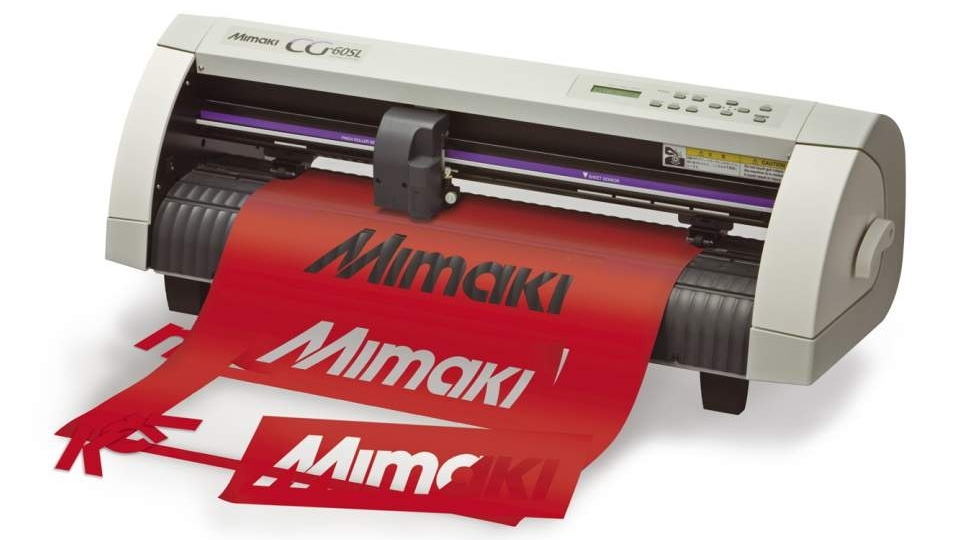
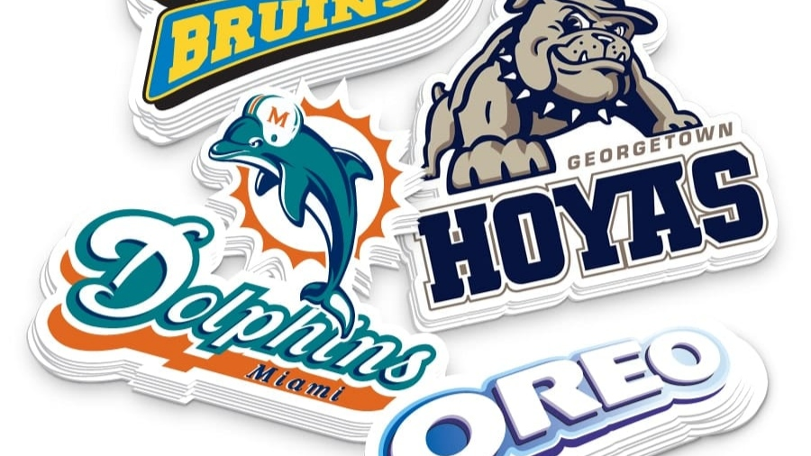

Informasi mengenai stiker, jenis dan macam stiker yang sering diproduksi di Indonesia.
Referensi agar calon pembeli tahu tentang stiker dan jenisnya. Sebab, banyak calon pembeli tahu fungsi dari sebuah stiker, namun sering kali ada yang belum tahu perbedaan dari masing-masing stiker itu sendiri.Secara umum,
Stiker merupakan informasi visual berupa lembaran kertas atau plastik yang diberi lem atau perekat pada satu sisinya.
Kemudian ditempel pada media tertentu. Misalnya, banderol harga, label makanan, petunjuk arah, striping motor dsb.
Stiker dibedakan menjadi beberapa jenis, yang paling umum digunakan meliputi stiker print, stiker cutting, stiker printcut.



Perbedaan Stiker
Bosan dengan tampilan striping motor kamu? Atau sedang mencari media promosi yang tahan lama untuk bisnis kamu? Stiker mungkin akan jadi solusi kamu. Sebab, stiker mempunyai keunggulan seperti :
Dengan desain yang menarik, merk atau identitas kamu akan mudah dikenali.
Stiker dibuat sesuai permintaan konsumen, jadi buatlah desain semenarik mungkin.
Mempercantik media yang ditempel.
Stiker bukan hanya sebagai sarana promosi dan komunikasi, tetapi juga memiliki nilai estetika terhadap media yang ditempeli stiker.
Media promosi yang terjangkau.
Stiker telah menjadi alternatif promosi, dengan berbagai pilihan ukuran dan bisa diaplikasikan ke media apapun.